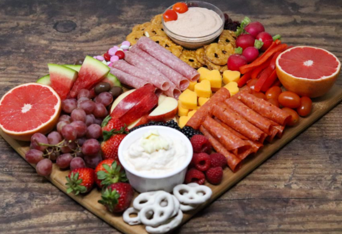
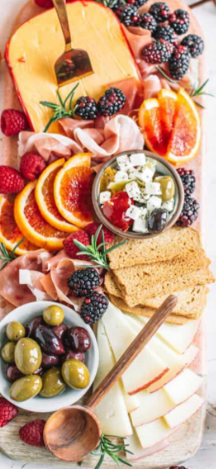

Last minute plans? Check out our favorite go-to pairings!

Party Night!
Pick 3-4 Cheeses:
- Soft, spreadable cheese
- Hard Cheese
- Semi Soft
- Soft Ripened
Pick 3-4 Meats:
- Prosciutto
- Finocchiona
- Capicolla
- Mortadella
- Speck
- Italian Dry Salami
- Genoa Salami
Date Night for Two
We recommend two cheeses, two meats, and some fruit:
Cheese Pairing Ideas
- Prairie Breeze/St. Angel
- Merlot Bellavitano/Roth Kase Original Havarti
- Carr Valley Smoked Gouda/Manchego
Cheese Pairing Ideas
- La Quercia Prosciutto/Finocchiona
- Hot Coppa/Cubed Mortadella
- Sopressata/Speck
""